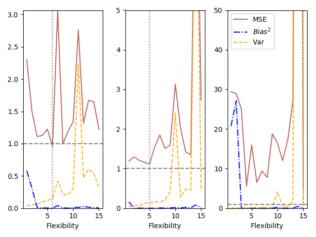

A Python Companion to ISLR
Table of Contents
1 Introduction
Figure 1 shows graphs of Wage versus three variables.

Figure 1: Wage data, which contains income survey information for males from the central Atlantic region of the United States. Left: wage as a function of age. On average, wage increases with age until about 60 years of age, at which point it begins to decline. Center: wage as a function of year. There is a slow but steady increase of approximately $10,000 in the average wage between 2003 and 2009. Right: Boxplots displaying wage as a function of education, with 1 indicating the lowest level (no highschool diploma) and 5 the highest level (an advanced graduate degree). On average, wage increases with the level of education.
Figure 2 shows boxplots of previous days' percentage changes in S&P
500 grouped according to today's change Up or Down.

Figure 2: Left: Boxplots of the previous day's percentage change in the S&P 500 index for the days for which the market increased or decreased, obtained from the Smarket data. Center and Right: Same as left panel, but the percentage changes for two and three days previous are shown.
2 Statistical Learning
2.1 What is Statistical Learning?
Figure 3 shows scatter plots of sales versus TV, radio,
and newspaper advertising. In each panel, the figure also includes an OLS
regression line.

Figure 3: The Advertising data set. The plot displays sales, in thousands of units, as a function of TV, radio, and newspaper budgets, in thousands of dollars, for 200 different markets. In each plot we show the simple least squares fit of sales to that variable. In other words, each red line represents a simple model that can be used to predict sales using TV, radio, and newspaper, respectively.
Figure 4 is a plot of Income versus Years of Education from the
Income data set. In the left panel, the ``true'' function (given by blue line)
is actually my guess.

Figure 4: The Income data set. Left: The red dots are the observed values of income (in tens of thousands of dollars) and years of education for 30 individuals. Right: The blue curve represents the true underlying relationship between income and years of education, which is generally unknown (but is known in this case because the data are simulated). The vertical lines represent the error associated with each observation. Note that some of the errors are positive (when an observation lies above the blue curve) and some are negative (when an observation lies below the curve). Overall, these errors have approximately mean zero.
Figure 5 is a plot of Income versus Years of Education and
Seniority from the Income data set. Since the book does not provide the
true values of Income, ``true'' values shown in the plot are actually third
order polynomial fit.

Figure 5: The plot displays income as a function of years of education and seniority in the Income data set. The blue surface represents the true underlying relationship between income and years of education and seniority, which is known since the data are simulated. The red dots indicate the observed values of these quantities for 30 individuals.
Figure 6 shows an example of the parametric approach applied to
the Income data from previous figure.

Figure 6: A linear model fit by least squares to the Income data from figure 5. The observations are shown in red, and the blue plane indicates the least squares fit to the data.
Figure 7 provides an illustration of the trade-off between flexibility and interpretability for some of the methods covered in this book.

Figure 7: A representation of the tradeoff between flexibility and interpretability, using different statistical learning methods. In general, as the flexibility of a method increases, its interpretability decreases.
Figure 8 provides a simple illustration of the clustering problem.

Figure 8: A clustering data set involving three groups. Each group is shown using a different colored symbol. Left: The three groups are well-separated. In this setting, a clustering approach should successfully identify the three groups. Right: There is some overlap among the groups. Now the clustering taks is more challenging.
2.2 Assessing Model Accuracy
Figure 9 illustrates the tradeoff between training MSE and test
MSE. We select a ``true function'' whose shape is similar to that shown in the
book. In the left panel, the orange, blue, and green curves illustrate three possible estimates
for \(f\) given by the black curve. The orange line is the linear regression
fit, which is relatively inflexible. The blue and green curves were produced
using smoothing splines from UnivariateSpline function in scipy package.
We obtain different levels of flexibility by varying the parameter s, which
affects the number of knots.
For the right panel, we have chosen polynomial fits. The degree of polynomial
represents the level of flexibility. This is because the function
UnivariateSpline does not more than five degrees of freedom.
When we repeat the simulations for figure 9, we see considerable variation in the right panel MSE plots. But the overall conclusion remains the same.

Figure 9: Left: Data simulated from \(f\), shown in black. Three estimates of \(f\) are shown: the linear regression line (orange curve), and two smoothing spline fits (blue and green curves). Right: Training MSE (grey curve), test MSE (red curve), and minimum possible test MSE over all methods (dashed grey line).
Figure 10 provides another example in which the true \(f\) is approximately linear.

Figure 10: Details are as in figure 9 using a different true \(f\) that is much closer to linear. In this setting, linear regression provides a very good fit to the data.
Figure 11 displays an example in which \(f\) is highly non-linear. The training and test MSE curves still exhibit the same general patterns.

Figure 11: Details are as in figure 9, using a different \(f\) that is far from linear. In this setting, linear regression provides a very poor fit to the data.
Figure 12 displays the relationship between bias, variance, and test MSE. This relationship is referred to as bias-variance trade-off. When simulations are repeated, we see considerable variation in different graphs, especially for MSE lines. But overall shape remains the same.

Figure 12: Squared bias (blue curve), variance (orange curve), \(Var(\epsilon)\) (dashed line), and test MSE (red curve) for the three data sets in figures 9 - 11. The vertical dotted line indicates the flexibility level corresponding to the smallest test MSE.
Figure 13 provides an example using a simulated data set in two-dimensional space consisting of predictors \(X_1\) and \(X_2\).

Figure 13: A simulated data set consisting of 200 observations in two groups, indicated in blue and orange. The dashed line represents the Bayes decision boundary. The orange background grid indicates the region in which a test observation will be assigned to the orange class, and blue background grid indicates the region in which a test observation will be assigned to the blue class.
Figure 14 displays the KNN decision boundary, using \(K=10\), when applied to the simulated data set from figure 13. Even though the true distribution is not known by the KNN classifier, the KNN decision making boundary is very close to that of the Bayes classifier.

Figure 14: The firm line indicates the KNN decision boundary on the data from figure 13, using \(K = 10\). The Bayes decision boundary is shown as a dashed line. The KNN and Bayes decision boundaries are very similar.

Figure 15: A comparison of the KNN decision boundaries (solid curves) obtained using \(K=1\) and \(K=100\) on the data from figure 13. With \(K=1\), the decision boundary is overly flexible, while with \(K=100\) it is not sufficiently flexible. The Bayes decision boundary is shown as dashed line.
In figure 16 we have plotted the KNN test and training errors as a function of \(\frac{1}{K}\). As \(\frac{1}{K}\) increases, the method becomes more flexible. As in the regression setting, the training error rate consistently declines as the flexibility increases. However, the test error exhibits the characteristic U-shape, declining at first (with a minimum at approximately \(K=10\)) before increasing again when the method becomes excessively flexible and overfits.
Figure 16: The KNN training error rate (blue, 200 observations) and test error rate (orange, 5,000 observations) on the data from figure 13 as the level of flexibility (assessed using \(\frac{1}{K}\)) increases, or equivalently as the number of neighbors \(K\) decreases. The black dashed line indicates the Bayes error rate.